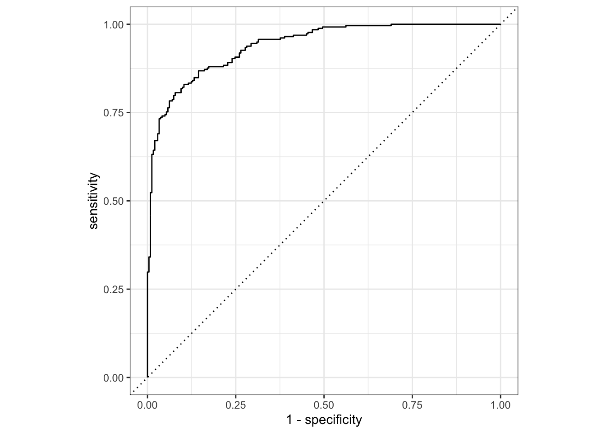
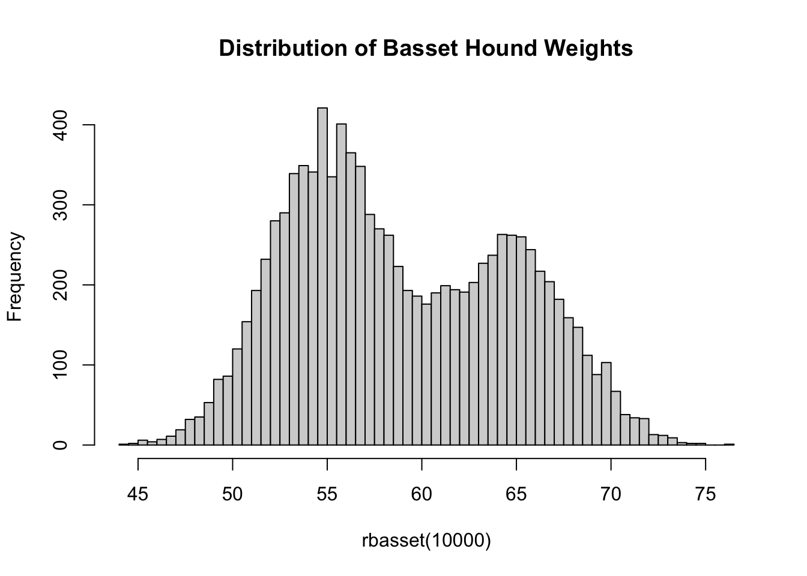

Notes for Lecture #13: Introduction to Course Competition & Unit III. Classification: Introduction to Classification
Outline:
Having (temporarily) finished our discussion of regression, we now turn our focus to classification.
A Taxonomy of Classification
Recall from before that we defined regression as the subset of supervised learning where the response (\(\by\)) was a quantitative variable, or at least one that is appropriate to model as such.1 By contrast, classification considers \(\by\) to take qualitative or categorical values from a discrete set. Though this restriction may feel limiting, it is actually quite powerful. We consider several different forms of classification, based on the support of \(\by\)2:
-
Binary classification: in this simplest case, \(\by\) takes one of two values, which we conventionally code as \(\{0, 1\}\) or \(\{-1, +1\}\), depending on which makes the math easier. Note that these numbers are not the actual content of the response; they are simply a mathematical convenience, because it’s far easier to multiply by \(\pm 1\) than cat/dog. (This is the same encoding process we used to prepare our data for regression models.)
Examples of binary classification include:
- Does an incoming student graduate within the next 6 years or no?
- Does a patient have a given disease?
- Is there a dog present in an image?
- Is this applicant qualified for a job?
Note that, in at least two of these, the underlying question is (arguably) not quite so binary, but we may choose to treat it as such. In particular, when assessing onset of a disease, the actual impairment to the patient is continuous, but it is common in medical practice to “binarize” the outcome. Any of you with aging family members know that cognitive decline occurs long before it’s ‘officially’ Alzheimer’s. Similarly, qualification for a job is perhaps best understood as a continuous (or even purely comparative) quantity “Is A more qualified than B?” but we choose to binarize it when deciding to whom a job offer should be made.
Recalling your probability theory, there is (essentially) only one distribution on \(\{0, 1\}\), the Bernoulli, so this scenario typically has the cleanest and simplest mathematics.
-
Multiclass classification: in this case, \(\by\) takes values in a set of finite and known, but potentially large, set of outcomes, which we will call \(\Ycal\). Before about 20 years ago, multiclass problems took \(|\Ycal|\) to be not much larger than 2, e.g., which blood type does a sample match or what language is a text sample written in, but much of the modern practical success of machine learning comes from the ability to treat very large outcome sets \(\Ycal\).
For instance, modern computer vision (CV) has moved beyond far simple binary classification:
The famed
ImageNetbenchmark data set has over 20,000 classes (arranged with additional structure) and modern data sets include even more. This can be contrasted with the olderMNISTdata set which collects only ten handwritten digits.Beyond CV, large multiclass classification has also revolutionized text modeling: when a chatbot generates text, it selects the next word from a large but finite set of English words.
Just like binary classification is rooted in the Bernoulli distribution, multiclass classification is rooted in the categorical distribution. When applied to a large class of outcomes, the categorical distribution becomes a multinomial, cf Bernoulli to binomial, so multiclass classification is also frequently called multinomial classification.
While our main focus is on binary and multiclass problems, it is worth noting some additional “modes” of classification exist.
-
Ordinal classification: in this case, \(\Ycal\) is an ordered set. The most common form of ordinal classification is the ubiquitous Likert scale which you have certainly encountered any time you have filled out a customer survey:
- Strongly Agree
- Agree
- Neutral
- Disagree
- Strongly Disagree
In this case, the categories clearly have an order and a ranking, but we can’t quite treat them as ‘numerical’ in the usual sense: Strongly Agree is not just Agree + Disagree.
Proper analysis of ordinal data is tricky and often poorly done. Complexities include the inappropriateness of statisticians’ most beloved tool, averaging3, and a fundamental ‘subjectiveness.’ Another common ordinal classification problem is the assignment of grades (A > B > C …). In this case, students and professors may agree that one piece of work may be better than another, but a student may feel their assignment deserves an A while the professor may judge it B work. It is quite difficult to infer each individual’s personal threshold for each category without extensive analysis.
We will not discuss ordinal data much in this course as it requires specialized methods. Typically ordinal data is modeled by treating the response as a rounded version of some underlying continuous variable: e.g., when grading hurricanes the classes (Category 1, Category 2, …) are derived from the underlying continuous variable of wind speed. This ‘hidden regression’ structure makes analysis of ordinal classification much closer to regression than binary classification.
-
Probabilistic classification: we noted above that binary classification can be thought of as modeling a Bernoulli random variable. If we shift our focus to modeling the Bernoulli parameter (the probability \(p \in [0, 1]\)) than the outcome (\(y \in \{0, 1\}\)), we have the paradigm of probabilistic classification.
As a general rule, statistically-grounded classification methods have a natural probabilistic output built-in while methods coming from the CS tradition are not always probabilistic. Because probabilistic estimates are often quite useful, there exist several useful methods to ‘bolt-on’ probabilistic outputs to pure binary classifiers.
If you want to think of probabilistic classification as a regression task, that’s quite reasonable. It occupies a liminal position between the two.
Metrics of Classification Accuracy
In the regression context, we had a relatively small number of loss functions:
- Mean Squared Error (MSE): mathematically convenient, easy interpretation, natural for OLS, optimizes for mean
- Mean Absolute Error (MAE): mathematically a bit tricky, most practical in many circumstances, gives rise to robust regression, optimizes for median
- Mean Absolute Percent Error (MAPE)
- Checkmark/Pinball Loss: gives rise to quantile estimation
- Huber loss: interpolates MSE and MAE
By contrast, in the classification context, we have many loss functions to work with. To get into them, it’s worth thinking back to the formalism of statistical hypothesis testing. Recall that, in hypothesis testing, we have a 2-by-2 table of possible outcomes:
| Truth | ||
|---|---|---|
| Decision | Null | Alternative |
| Retain Null | True Negative | False Negative (Type II Error) |
| Reject Null | False Positive (Type I Error) | True Positive |
Suppose that we have a large number (\(n\)) of binary classification points. If we let \(\hat{y}_i\) be our prediction and \(y^*_i\) be the actual outcome, we can construct a similar table:
| Truth (Second index) | ||
|---|---|---|
| Prediction (First Index) | \(y_i^* = 0\) | \(y_i^* = 1\) |
| \(\hat{y}_i=0\) | \(n_{00}\) True Negatives | \(n_{01}\) False Negative (Type II Errors) |
| \(\hat{y}_i=1\) | \(n_{10}\) False Positives (Type I Errors) | \(n_{11}\) True Positives |
From this structure, we get several useful ideas:
A confusion matrix is a 2x2 (or \(K\)-by-\(K\) for \(K\)-multiclass problems) table comparing the right answer (here “Truth” on the columns) with our guess (here “Decision” on the rows). A good classifier will have large values “on diagonal” (\(n_{00} + n_{11}\)) and small values “off diagonal” (\(n_{01} + n_{10}\))
-
The notion of true/false positive/negatives. These can be a bit tricky to remember, but the convention is:
- The noun (positive/negative) captures the prediction
- The adjective (true/false) assesses the prediction
So a “false positive” means that we guessed the positive (+1) class, but that we were wrong and the truth was the negative (-1 or 0) class.
From this simple count table, we can create many different ratios. I find the statistical terminology a bit more intuitive than the ML terminology:
- True Positive Rate: Of the actual positives (\(y^*=1\)), what fraction are predicted correctly (truly) positives (\(\hat{y} = 1\))? \(\text{TPR} = n_{11}/(n_{01} + n_{11})\)
- False Negative Rate: Of the actual positives (\(y^*=1\)), what fraction are predicted incorrectly (falsely) as negatives (\(\hat{y} = 0\))? \(\text{FNR} = n_{01}/(n_{01} + n_{11})\)
- True Negative Rate: Of the actual negatives (\(y^*=0\)), what fraction are predicted correctly (truly) as negatives (\(\hat{y} = 0\))?
\(\text{FNR} = n_{00}/(n_{00} + n_{10})\) - False Positive Rate: Of the actual negatives (\(y^*=0\)), what fraction are predicted incorrectly (falsely) as positives (\(\hat{y} = 1\))? \(\text{FPR} = n_{10} / (n_{00} + n_{10})\)
These clearly satisfy some useful relationships:
\[\text{TPR} = 1 - \text{FNR} \Leftrightarrow \text{FNR} = 1 - \text{TPR}\]
and
\[\text{FPR} = 1 - \text{TNR} \Leftrightarrow \text{TNR} = 1 - \text{FPR}\]
In this scenario, we recognize the false positive rate as the size (or level) associated with a statistical test (5% for a 95% confidence test) and the true positive rate as the power. Again, the statistical definitions can help us navigate the confusing terminology here: the confidence of a test, and therefore its false positive rate, are defined assuming the null (i.e., in a “true” negative scenario).
The “other direction” of rates – where we condition on the prediction instead of the truth – are less common, except for the false discovery rate:
\[\text{FDR} = \frac{n_{10}}{n_{10} + n_{11}}\]
The FDR is commonly used in scientific settings and it answers this question: if a scientist makes \(K\) discoveries, what fraction of those claimed discoveries are correct?
Warning
Note that the convention used to define rates can be quite confusing and is perhaps opposite the convention used to define counts.
To compute the number of true positives, we look at predicted positives and count the number of “truths”, while to compute the true positive rate, our denominator is the number of actual positives and we count the fraction of correct predictions.
To me, the FDR is actually the most clearly named rate; I try to remember the definition of FDR and ‘work backwards’ to FPR since it must be something different than FDR.
In ML context, you will commonly hear reference to precision and recall. With our definitions above, we have
- Precision = \(1 - \text{FDR}\)
- Recall = \(\text{FNR} = 1 - \text{TPR}\)
so, by maximizing precision, we ensure that all of our predicted positives are true positives and, by maximizing recall, we ensure that we have no false negatives (that is, we truly identify all of the real positives).
In the medical context, you may encounter alternative metrics of
- Sensitivity, equal to TPR
- Specificity, equal to TNR
This zoo of terms is admittedly quite confusing, but the Wikipedia article on Precision and Recall has an excellent table.
Combining Metrics
If you look at the 2x2 table above, you can convince yourself that it has two “degrees of freedom:” having a high TPR implies nothing about the TNR (or equivalent metrics). That is, it is possible to have a classifier with arbitrarily good TPR (equivalently, small FNR) and terrible TNR (equivalently, small FPR).
In fact, we can construct one trivially:
\[\hat{f}(\cdot) = 1\]
That is, the function that predicts \(1\) always. This classifier has zero false negatives, because it has no negatives whatsoever, but it necessarily has many false positives.4
Conversely,
\[\hat{f}(\cdot) = 0\]
has no false positives, but many false negatives.
Clearly, we need a ‘combination’ metric that combines both degrees of freedom into a single score. Popular choices include:
- Accuracy: the fraction of correct predictions (\((n_{00}+n_{11})/n\))
- Balanced Accuracy: \(\frac{\text{TPR} + \text{TNR}}{2}\)
- \(F_1\) Score: \(2 *(1 - \text{FDR}) / (\text{TPR} - \text{FDR} +1)\)
While these choices are popular, none of them are actually all that suitable for a real application. To properly evaluate a classifier, we need to know the real cost of false positives and false negatives, as well as the population base rates, and balance things accordingly.
For instance, if we are designing a ‘baseline’ medical diagnostic to be used as part of annual physicals, we need to think about what happens with false negatives and false positives.
- If we give a false positive, patients will undergo a better test that costs $1,000 but gives an accurate answer in all circumstances (a “gold standard”).
- If we give a false negative, patients will leave a condition untreated until it becomes far worse, requiring expensive surgery costing $50,000.
In this case, we might desire a classifier that minimizes \[n_{10} + 50 n_{01}\], not any of the of the ‘standard’ metrics. Note also that the particular FPR, FNR of this classifier will depend on the rate of the condition in the population, so we can’t actually find the best procedure by looking at FPR, FNR in isolation.
While this decision-theoretic approach is optimal, it is often quite difficult to characterize in practice. In the example above, for instance, we made the choice to only minimize cost, without seeking to minimize suffering. (What if the untreated condition is incredibly painful? Should we intervene more often?) This sort of decision-making is ultimately very problem-specific and too often ignored in the academic literature. In practice, designing (and optimizing) the correct loss function is far more relevant to practical outcomes than finding the best classifier to optimize an irrelevant cost function.
Let’s work through a simple example which you might recall from earlier notes: when designing a medical test for cancer, there are two bad outcomes: ‘false positive’ when you tell someone they might have cancer, cause them significant mental anguish, and send them for unnecessary expensive follow-up tests; and ‘false negative’ when you tell them they don’t have cancer and leave their tumors untreated and let them metastasize. Both bad, but here ‘false negative’ is much worse and clinical guidelines should reflect that.
Let’s put some basic numbers on it: let’s suppose that, among all people similar to the patient (based on age, lifestyle, family history, co-morbidities, initial screenings, etc.), we expect the patient to have only a 5% chance of having cancer. Let’s assume the cost of letting the cancer grow to the point where it is undeniable and requires surgical intervention is $500,000, while the cost of doing a perfect test (sometimes called ‘gold-standard’) now is $1,000; if the gold-standard test confirms cancer, we can perform a smaller surgery at a cost of only $100,000. What should we tell the patient?
Working through the expected values:
- No Follow-Up: Expected cost is \(5\% * \$500\text{K} + 95\% * \$0 = \$25\text{K}\)
- Send for Follow-Up: Expected cost is \(\$1\text{K} + 5\% * \$100\text{K} + 95\% * \$0 = \$6\)
In this case, it is clearly more cost effective to send the patient for follow-up gold-standard screening.
Extending this example, we see that the threshold probability is not 50% but:
\[\begin{align*} 500\hat{p} + 0(1 - \hat{p}) &= 1 + 100\hat{p} + 0(1-\hat{p}) \\ 400\hat{p} &= 1 \\ \hat{p} &= 0.25\% \end{align*}\]
So we would tell a patient they need to be scanned for cancer if they have even a 0.25% probability of cancer. Note that our decision (or action) is not just our ‘most likely’ - the much higher cost of a false negative (eventual expensive and dangerous surgery) pushes us towards lowering the false negative rate by decreasing our threshold probability and outputting more positive labels.
In actual practice, these decision trees can be much more complicated (multiple tests, multiple stage decisions, etc.).
TipValue of a Human Life
A key question in medical economics is how much is a human life actually worth? While we would in a perfect world want everyone to receive all possible care, in a finite world decisions have to be made about how to ration finite medical resources. (In the US, we do this through infinitely-complicated health insurance markets; in more centralized systems like the UK, this decision is made by NHS analysts and economists.) As societies become richer, they can generally put a higher dollar value on human life.
What do you expect this to do to the false negative/false positive balance associated with cancer tests? Why?
Richer patients are less concerned about money. Why they likely to get more medical tests? (Think about utility.)
This can all feel very cold and clinical. Unfortunately, it often is.
Trade-Off of Recall and Precision
Our discussion of ‘trivial’ classifiers that focus on one metric while completely ignoring the other may remind you of the way this is typically solved in statistical testing procedures. We specify a maximum acceptable false positive rate (level or 1 - confidence) and then minimize the false negative rate subject to that constraint; in statistical speak, we seek a test with maximal power.
As we have seen with ridge and lasso regression, there is typically a ‘knob’ (hyperparameter) we can pick to tune a particular classifier. It is common to apply the classifier at all values of this knob, measure the TPR and TNR at all levels, and plot them in a trade-off curve. This curve is, for historical reasons, known as the receiver operating characteristic (ROC)5 curve and it looks something like:
Here we see that, for this particular classifier, increased specificity is associated with decreased sensitivity or, in the alternative terms, increased TNR is associated with decreased TPR. As illustrated by our example of constant predictors above, this is a quite typical trade-off.
Curves like this can be used in a few ways, none of which are fully satisfying:
- If we have two curves, we can plot their ROCs on the same set of axes. If one classifier is uniformly above the other, it is said to dominate the other and is better for all applications. Sadly, this is rarely the case.
- If we have two curves and plot their ROCs, but the ROCs cross, we don’t have strong guidance on which model to prefer, but if one is almost always above the other, we will likely still use it.
A commonly reported metric is the area under the ROC curve (AUC), which ranges from 0.0 to 1.0, with higher values being better. This is a bit unsatisfying compared to the full decision theoretic analysis, but it is an improvement over some other metrics as it at least addresses the fact there is a trade-off.
What does an AUC less than 0.5 imply? If you get an AUC less than 0.5, what should you do? Why is AUC near 0 actually a good thing?
While the ROC is typically motivated by presence of a ‘tuning knob’, even methods like logistic regression (which have no obvious knobs) have an implicit knob we can choose to tune: the classification threshold. (Recall our discussion above) There is no law of nature that says that a predicted probability of 55% has to correspond to a prediction of the positive class.
Scoring Functions
Scoring functions are loss functions particularly suited for evaluation of probabilistic classifiers. Unlike our confusion-matrix set of metrics, it’s less clear how we should evaluate probabilistic classifiers.
It is clear that, if we predict something with 80% probability and it doesn’t happen, this is a ‘worse’ mistake than if we only had a 51% probability, but how can we measure this formally?
- Calibration and Tightness
- Log Scores
Types of Classification Methods
In this course, we will consider two main types of classifiers:
Generative classifiers, which attempt to jointly model \((\bX, \by)\) and use probabilistic mathematics (mainly Bayes’ Rule) to infer \(\by | \bX\) from the joint model.
Discriminative classifiers, which directly attempt to estimate the ‘boundary’ between the classes.
As you will see, the terminology around these methods is particularly terrible.
Building Mutliclass Classifiers from Binary Classifiers
As we introduce methods, we will typically derive them for the binary classification task. If we want to apply them to the multiclass task, how can we extend them? It would be quite cumbersome if we needed brand new methods each time.
In general, there are two main strategies we might use:
- One vs Rest
- Each vs Each
For simplicity, assume we are predicting \(K\) classes. In the “one-vs-rest” strategy, we will build \(K\) binary classifiers, of the form:
- Class 1 vs Not Class 1 (i.e., Class 2, 3, 4, \(\dots\), \(K\))
- Class 2 vs Not Class 2 (i.e., Class 1, 3, 4, \(\dots\), \(K\))
- etc.
- Class \(K\) vs Not Class \(K\) (i.e., Class 1, 2, 3, \(\dots\), \(K-1\))
To make an actual prediction, we take the highest score of each of these classifiers. E.g., if \(K=3\) for categories “Red”, “Green” and “Blue”, we might predict:
- \(\P(\text{Red}) = 0.8\) and \(\P(\text{Not Red}) = 0.2\)
- \(\P(\text{Green}) = 0.4\) and \(\P(\text{Not Red}) = 0.6\)
- \(\P(\text{Blue}) = 0.2\) and \(\P(\text{Not Red}) = 0.8\)
Our final prediction would then be the maximizer, “Red.”
This strategy is relatively simple and intuitive, but for very large \(K\), the maximum can be far less than 50%, so it may feel a bit funny. (Why is this not an issue for \(K=2\)?)
Conversely, in the “each vs each” (sometimes called “one vs one”) setting, we train \(\binom{K}{2} = K(K-1)/2\) classifiers for every possible pair of classes. To get the prediction, we then take a ‘majority vote’ of the classifiers.
In our \(K=3\) example above, we would have three classifiers:
- Red vs Blue, which we fit after throwing out the “Green” points
- Red vs Green, which we fit after throwing out the “Blue” points
- Green vs Blue, which we fit after throwing out the “Red” points
If we make predictions for a single point, our binary classifications might be
- Red vs Blue: Red
- Red vs Green: Red
- Green vs Blue: Blue
In this case, we would take a majority vote to get “Red” as our final prediction.
I find this strategy a bit counterintuitive, but it is sometimes faster than the one-vs-rest strategy since each individual model is fit to a subset of the entire data set.
Certain modern ML strategies, in particular deep neural networks, predict the probability of all \(K\) classes from a single model. In this case, we typically select the single most probable class as our prediction.
In applications where there are multiple contenders and the difference between them is small, it is common to randomly select a class in proportion to its predicted probability. This strategy is one of the things that gives ChatGPT its randomness; it usually predicts the most likely next word, but sometimes it does something a little bit weird.
Note that it is actually usually pretty hard to make a model that predicts a large set of probabilities simultaneously: in particular, it’s hard to get a vector that sums to one (like probabilities should). To address this, a softmax normalization is applied. This is essentially nothing more than i) making sure each predicted value is positive; and ii) dividing them all by the sum so they add to 1.
Specifically, if we give a unitless score of 2 to ‘cat’, 4 to ‘dog’ and -1 to ‘bird’ as the final word in the sentence ‘The best pet is a _____’, we can construct a vector of probabilities as:
\[\begin{align*} (5, 10, -1) &\to (e^5, e^{10}, e^{-1}) \\ &\to \left(\frac{e^5}{e^5 + e^{10} + e^{-1}}, \frac{e^{10}}{e^5 + e^{10} + e^{-1}}, \frac{e^{-1}}{e^5 + e^{10} + e^{-1}}\right) \\ &\approx (11.8, 87.5, 0.7) \end{align*}\]
(There are some additional ‘knobs’ here; rather than looking at the whole set of possible outcomes and the very long tail of small probabilities, models are often sampled from just the top-\(K\) possible outputs. An additional parameter known as ‘temperature’ is often also used to make things more-or-less random as the problem requires.)
Generative Classifiers
We begin our study of classifiers with an analysis of generative classifiers. While many generative classifiers have appeared in the literature, they can essentially all be derived from a standard approach We will discuss this general strategy first and then turn our attention to specific named instances.
Mixture Models
You may recall from your probability courses that a (discrete) mixture model is a distribution of the form:
\[X \sim \begin{cases} X_1 & Z = 1 \\ X_2 & Z = 2 \\ \dots \\ X_K & Z=K \end{cases} \text{ where } \textsf{supp}(Z) = \{1,\dots, K\} \text{ and } X_i \sim \Pcal_i \text{ for all $i$ and } Z \perp X_i, X_i \perp X_j\, (i\neq j)\]
That’s quite a bit to unpack, so let’s take it piece by piece: the random variable \(X\) has a \(K\)-component mixture distribution if we can sample \(X\) by generating \(K\) independent random variables \(\{X_1, \dots, X_K\}\) (with different distributions) and then selecting one of them at random.
Let’s look at a concrete version of this: suppose we have a population of male and female basset hounds that is 60% female. The weight of male basset hounds follows a \(\Ncal(65, 10)\) distribution while females have weight distributed as \(\Ncal(55, 10)\). The weight of a randomly selected basset can be sampled as
[1] 56.35875If we collect the weights of many basset hounds, we see that the resulting distribution is not normally distributed:
hist(rbasset(10000), breaks=50, main="Distribution of Basset Hound Weights")
In fact, this is a bimodal distribution with each ‘lump’ representing males or females.6 Distributions of this form can often be written more compactly using a ‘convex combination’ notation:
\[\text{Basset} \sim \frac{2}{5}\Ncal(65, 10) + \frac{3}{5}\Ncal(55, 10)\]
The above notation can be interpreted as specifying a draw from the first distribution with probability \(2/5 = 40\%\) and from the second with probability \(3/5 = 60\%\); that is, it’s a particular 2-component mixture of normals.
In specifying this mixture, the probabilities of each component must be non-negative and must sum to 1; these are exactly the same restrictions we put on a convex combination of points earlier in the course. In fact, the set of mixture distributions can be consider the ‘convex set’ containing all of its individual components.
Inference from a Mixture Distribution
Now suppose you are on a walk and you meet a very friendly 62 pound basset hound. You of course want to pet this marvelous dog, but you need to ask the owner’s permission first: in doing so, should you ask “may I pet him?” or “may I pet her?”
While the basset hound may not care if you misgender it,7 you still want to be polite, recall that you can use Bayes’ Rule to ‘invert’ the mixture distribution. That is, while the mixture distribution normally goes from sex to weight, Bayes’ rule will let us go from weight back to sex.
Specifically, in this case, Bayes’ rule tells us:
\[\P(\text{Female}|\text{Weight=62}) = \frac{\P(\text{Weight=62}|\text{Female})\P(\text{Female})}{\P(\text{Weight=62}|\text{Female})\P(\text{Female}+\P(\text{Weight=62}|\text{Male})\P(\text{Male}))}\]
The math here is a bit nasty numerically, but we can do it in R quite simply:
p_female <- 0.6
p_male <- 1-p_female
p_62_female <- dnorm(62, mean=55, sd=sqrt(10))
p_62_male <- dnorm(62, mean=65, sd=sqrt(10))
p_female_62 <- (p_62_female * p_female) / (p_62_female * p_female +
p_62_male * p_male)
cat("There is a ", round(p_female_62 * 100, 2), "% chance that basset is a female.")There is a 16.87 % chance that basset is a female.Given that calculation, you take a chance and ask whether you can pet him.
What have we done here? We have built a basset-sex classifier from a combination of the population distribution and Bayes’ rule. This is the essence of generative classifiers - if we know the distribution, accurate probabilistic classification is a straightforward application of Bayes’ rule. In practice, we don’t know the distribution a priori and it must be estimated from data. Different generative classifiers essentially are just different ways of estimating the population (mixture) distribution.
Building Generative Classifiers
Let’s formalize our approach for a two-class classifier though the extension to multi-class is simple enough. Given a training set
\[\Dcal_{\text{Train}} = \{(\bx_1, y_1), (\bx_2, y_2), \dots, (\bx_n, y_n)\}\]
we assume \(\bX\) follows a two-component mixture where \(Y\) is the mixing variable:
\[\bX | Y=0 \sim \Pcal_0 \text{ and } \bX | Y=1 \sim \Pcal_1\]
Clearly to fully specify this distribution, we need three things:
- To know the distribution of \(Y\)
- To know the distribution \(\Pcal_0\)
- To know the distribution \(\Pcal_1\)
The distribution of \(Y\) is relatively straightforward: since it only takes values \(\{0, 1\}\) it must have a Bernoulli distribution and hence the only thing we need to estimate is the probability, \(\pi_1\), that \(Y=1\). The simplest approach to estimating the Bernoulli probability is to simply take the empirical probability from the training data set, i.e., the fraction of observations where \(Y=1\), but this can also be estimated using knowledge of a broader data set or a different population than the training data. For instance, if a data set is known to overindex on \(Y=1\), e.g., because it contains patients who self-reported some disease, it may be more appropriate to estimate \(p\) based on the population-wide prevalance of the disease. These concerns are typically rather problem specific.
Estimation of \(\Pcal_0, \Pcal_1\) may be more difficult. If the training data is extremely large, we may use a non-parametric estimator, e.g., a multivariate histogram, but in general we will need to use some sort of restrictive (parametric) model. The most commonly used generative classifiers assume some sort of multivariate normal structure, but you can create ‘custom’ classifiers appropriate to specific domains.
For now, let us assume \(\Pcal_{0}, \Pcal_1\) have been estimated and that they have PDFs \(p_0(\cdot), p_1(\cdot)\). Applying Bayes’ rule as before, with prior (baseline) probabilities \(\pi_0, \pi_1 = 1-\pi_0\), we get the following probabilities
\[\begin{align*} \P(Y = 1 | \bx) &= \frac{\P(\bx | Y = 1)\P(Y=1)}{\P(\bx | Y = 0)\P(Y=0)+\P(\bx | Y = 1)\P(Y=1)} \\ &= \frac{p_1(\bx)\pi_1}{p_0(\bx)\pi_0 + p_1(\bx)\pi_1} \end{align*}\]
If we are happy with a probabilistic classifier, we are essentially done. If we want a true binary classifier, i.e., a \(\{0, 1\}\) valued ‘point predictor’, we also need to set a classification threshold, \(\overline{p}\), to obtain:
\[\delta(\bx) = \begin{cases} 0 & \frac{p_1(\bx)\pi_1}{p_0(\bx)\pi_0 + p_1(\bx)\pi_1} < \overline{p} \\ 1 & \text{ otherwise} \end{cases}\]
\(\overline{p}\) can be chosen to optimize a relevant performance metric (if you practice good sample splitting hygiene) or via a full decision theoretic analysis.
That’s basically it! As we will see next time, things get much trickier when we want to incorporate data from multiple features and we don’t actually know the underlying distributions that we would want to put into our Bayes’ Rule math.
Footnotes
Recall that regression problems need to be truly numeric. A good proxy is whether taking averages makes sense (as it will for wealth or height) or not (ZIP codes).↩︎
The support of a random variable is the set of values it can take. So the support of a normal distribution is \(\R\), the support of a Poisson variable is the set of non-negative integers, etc.↩︎
Even though it doesn’t make sense to average ordinal data, University administrators are notorious for averaging Likert data to evaluate faculty. This is a nigh-universal grievance of numerically-minded faculty, but getting universities to change their established procedures to something statistically reasonable is only slightly less impossible than drawing blood from a turnip.↩︎
In this case, the FPR is exactly equal to the negative rate in the population.↩︎
Don’t confuse this with Rate of Change.↩︎
Note that a mixture of normals is not always multimodal (e.g., if the two means are very close together), but a mixture of normals is a common model for multimodal data.↩︎
Among their many notable qualities, Basset hounds are quite slow to anger. They also don’t speak English.↩︎